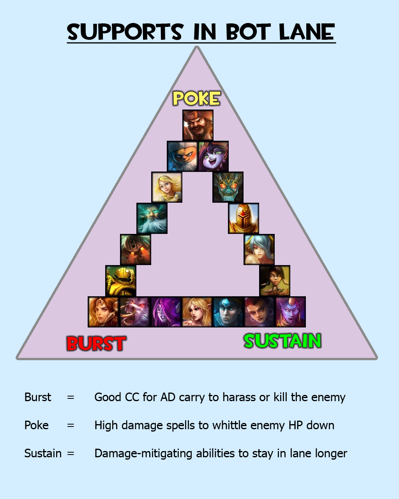

So, you wish to build a support-playing champion, yes? Lets get started!

When building a support champion, its all about who you pick that determines what item set you should build.
As you can see in the image above, there are 3 types of supports. Burst, sustainers, and pokers. The definitions above may not be too clear, so let me explain.
- Burst
-
Champions who use all of their skiils ( Or your QWER abilaties) and pretty much spam the keyboard on the enemy. These champions use all of there attacks in one or two short burts, in order to eradicate the enemy very fast.
- Poke
-
-
Exactly what it says. Poke. Remember when you were little, and you had a sibling who would poke you just to annoy the shit out of you, then run away when you went to poke them back? Same exact idea. While this appeals more to ranged champions, poking is a good way to deal damage over a period of time to keep someone at bay, and finally deal an eradicating blow once you get them down to alomst nothing. Pokers are a great way to keep your team ahead of the game.
- Sustain
- While sustainers arent the most bad ass champions in the Rift, they're made to stay in lane longer, and keep enimies at bay for longer period of time. While low in AD, these champoins use more abillity power, (Or AP for short) and have a signifigant amount more of health in the game. These champoins are meant to be as a "crowd control" if you will. They stay in the back of the pack during pushes, but they keep the enemey team back, while sacrificing health and armor so that your teammates may attack the enemy all at once with no inital respose.